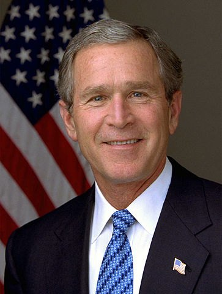

Led the country through the September 11 attacks and launched wars in Afghanistan and Iraq, the latter over weapons of mass destruction that were never found. He cut taxes twice, added prescription drugs to Medicare, and ended his presidency in the 2008 financial crisis with the TARP bank rescue.
Shaded areas show the years in office, with a few years before and after for comparison. Budget years run October to September, so a new president's first budget year starts the fall after they take office.
Jan 19, 2001: $5.73 trillion → Jan 20, 2009: $10.63 trillion
Debt as a share of GDP. Above 100% means the debt is bigger than a year of everything the country produces.
Money borrowed each budget year (below the line) or paid down (above).
Jan 2001: 4.2% → Jan 2009: 7.8%. Monthly rates; the chart shows yearly averages.
How much prices rose each year (consumer price index).
What everyday prices and paychecks did while in office.
Prices use the consumer price index (MeasuringWorth). The minimum wage is the federal rate set by Congress.
291 orders, numbered 13198–13488.
Source: Federal Register: G.W. Bush executive orders (full list of every order).
Created a White House office to help religious and community groups compete for federal grants.
Federal RegisterFroze the assets of people and groups tied to terrorism, the main tool against terror financing ever since.
Federal RegisterCreated the White House office that became the Department of Homeland Security in 2002.
Federal RegisterLet former presidents and vice presidents delay release of their records. Revoked by Obama in 2009.
Federal RegisterEncouraged stem cell research that does not destroy human embryos, alongside his limits on federal funding.
Federal RegisterDeclared that the CIA's detention and interrogation program complied with the Geneva Conventions. Revoked by Obama in 2009.
Federal RegisterSource: Executive Orders Archive, compiled from the American Presidency Project and the Federal Register. Topics are the archive's automated tags; "Revoked" and similar labels come from the Federal Register's records.
A pardon wipes out the punishment for a federal crime; a commutation shortens a sentence but leaves the conviction. Counts are by federal fiscal year. Bush granted clemency less often than any two-term president of the modern era.
Source: U.S. Dept. of Justice, clemency statistics, which lists every recipient with the crime and sentence.
The crime: Perjury, obstruction of justice and lying to the FBI in the investigation of who leaked CIA officer Valerie Plame's identity
Sentence: 30 months in prison; $250,000 fine
Why it drew attention: Chief of staff to Vice President Cheney. Bush erased the prison term but left the conviction and fine; Trump fully pardoned him in 2018.
SourceThe crime: Shooting an unarmed, fleeing drug smuggler at the border and covering it up
Sentence: 11 and 12 years
Why it drew attention: Border Patrol agents whose cause was taken up by conservative media and members of Congress.
SourceThe crime: Mail fraud and making false statements in real estate deals
Sentence: Five months in prison
Why it drew attention: Bush revoked the pardon the next day after reports that Toussie's father had donated to Republicans, the only known revoked presidential pardon.
SourceThe crime: Violating the Neutrality Act by smuggling B-17 bombers to Israel in 1948
Sentence: 18 months
Why it drew attention: A rare posthumous pardon, for helping arm Israel in its war of independence.
SourceThe same checklist for every president. Tap a row for details and sources.
Rep. Dennis Kucinich introduced 35 articles of impeachment in June 2008; the House referred them to committee without a vote.
SourceNever charged with a crime.
Vice presidential chief of staff Scooter Libby (perjury, 2007), and officials caught up in the Jack Abramoff lobbying scandal, including Deputy Interior Secretary J. Steven Griles. No cabinet secretary was charged; Attorney General Alberto Gonzales resigned in 2007.
Patrick Fitzgerald investigated the leak of CIA officer Valerie Plame's identity (2003–2007), leading to Libby's conviction.
SourceThe Justice Department's inspector general (2008) found that several U.S. attorneys were fired for improper political reasons and that aides illegally used political tests in hiring career lawyers. A special prosecutor found no crimes (2010).
SourceWhat happened, what was proven, and how it ended.
The administration made Iraq's weapons of mass destruction the central case for the 2003 invasion. No stockpiles were found.
Outcome: The Iraq Survey Group confirmed there were none (2004). A 2008 Senate Intelligence Committee report found some public statements were not backed by intelligence; whether officials knowingly misled is debated.
SourceThe CIA used waterboarding and other 'enhanced interrogation' on terrorism suspects, approved by Justice Department legal memos.
Outcome: A 2014 Senate Intelligence Committee report found it was brutal and ineffective; no officials were prosecuted.
SourceU.S. soldiers abused and humiliated Iraqi detainees and photographed it.
Outcome: 11 soldiers were convicted; no senior officials were charged.
SourceThe identity of a CIA officer was leaked to reporters after her husband criticized the case for war.
Outcome: Libby was convicted of lying to investigators; no one was charged with the leak itself.
SourceNine U.S. attorneys were fired, some after resisting political pressure on cases.
Outcome: The inspector general found improper political motives; the attorney general resigned.
SourceThe NSA monitored Americans' international calls and emails without the court warrants required by law.
Outcome: A federal judge ruled it unconstitutional (2006; reversed on appeal on standing grounds). Congress later changed the law to allow much of it.
SourceFederal relief was slow as New Orleans flooded; about 1,400 people died.
Outcome: A bipartisan House report, 'A Failure of Initiative', documented failures at every level; the FEMA director resigned.
SourceA Republican lobbyist traded gifts and trips for official favors.
Outcome: About 20 people were convicted, including a congressman and two Bush administration officials.
SourceWidely quoted remarks, with the context they were said in.
Either you are with us, or you are with the terrorists.
Major combat operations in Iraq have ended.
Brownie, you're doing a heck of a job.